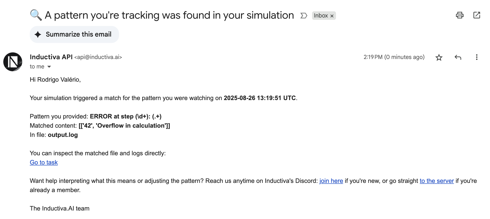

📨 Simulation Notifications via Observer Events
Note: This tutorial demonstrates passive tracking, observer triggers run on Inductiva servers and automatically send notifications when events occur. For active tracking, refer to the Real-Time Monitoring & Auto Termination tutorial, where monitoring runs on your local machine.
Challenge
Simulations often produce subtle signals instead of outright failures:
Files may appear (e.g.,
error.logordone.flag) indicating success, warning, or failure.Log files may contain important information buried inside thousands of lines (e.g.,
ERROR,WARNING, convergence stats).
Manually monitoring these events is tedious and error-prone, especially for long-running or multiple parallel tasks.
The Solution
Inductiva observer events let you watch for file or log events and automatically take action, such as sending an email.
Key features:
Detect when a file exists, or when its contents match a regex.
Supports capturing groups in regex to extract relevant information.
Works with any simulator that writes logs or intermediate files.
Flexible for detecting errors, warnings, milestones, or custom progress markers.
Example Use Cases
Error detection: Catch critical messages hidden in logs (e.g.,
ERROR,Segmentation fault).Progress tracking: Watch for intermediate results or checkpoint files.
Completion alerts: Notify when a
doneflag appears.Value monitoring: Extract numbers from logs (e.g., residuals, energy, temperature) using regex.
Using Regex in Observers
Regex allows you to detect specific strings or patterns in logs.
Match groups
( … )allow you to capture important parts of a line, such as:Step number or iteration
Error or warning message
Numeric values like residuals, energy, or temperature
Captured groups can be included in email notifications to provide context.
💡 If you are new to regex, see the official Python regex guide:
https://docs.python.org/3/library/re.html
How Observers Work
There are two main types of observer triggers:
File-Based Triggers – Detect when a specific file appears. Useful for milestone detection, completion flags, or error files.
Log-Based Triggers (Regex) – Detect patterns inside log files, including errors, warnings, or numeric values. Can capture groups to extract detailed information like step number or error messages.
File-Based Trigger – Detect When a File Appears
Purpose: Trigger an email notification when a specific file is created.
Use case: Completion flags, error files, or other milestones.
# ===== File-Based Trigger =====
from inductiva import events
events.register(
trigger=events.triggers.ObserverFileExists(
task_id=task.id,
file_path="done.flag"),
action=events.actions.EmailNotification(
email_address="your@email.com")
)
Email received:

Log-Based Trigger – Detect Patterns with Regex
Purpose: Trigger an email when a line in a log matches a regex.
How it works: You provide a regular expression (regex) that matches the content you want to detect. The observer continuously scans the log file and triggers the action whenever a match occurs.
Flexibility: Can detect errors, warnings, or any custom string pattern. Optional match groups allow you to extract specific parts of the line for more detailed notifications.
💡 If you are new to regex, see the official Python regex guide: https://docs.python.org/3/library/re.html
# ===== Log-Based Trigger =====
# Regex captures groups: (\d+) = step number, (.+) = error message
from inductiva import events
events.register(
trigger=events.triggers.ObserverFileRegex(
task_id=task.id,
file_path="output.log",
regex=r"ERROR at step (\d+): (.+)"), # Capture step and message
action=events.actions.EmailNotification(
email_address="your@email.com")
)
Explanation: Regex can capture groups, such as step number and message.
Regex: ERROR at step (\d+): (.+)
(\d+): captures the step number(.+): captures the error message
Example: If a log line reads ERROR at step 42: Overflow in calculation, then (\d+) - 42 and (.+) - Overflow in calculation.
Email received: 